Mark-Sweep の使用メモリ量・時間オーバヘッドを改善する手法を見ていく。
改善の前に、Mark-Sweep の立ち位置を確認しておく。
ここでは、Reference counting と比較する。
| Mark-Sweep (non-incrementa, non-generational) |
Reference Count | |
|---|---|---|
| Cyclic data structure の対応 | 特殊な処理は不要 | 特殊な処理が必要 限られた条件下で対応可 |
| Collectのタイミング | メモリが不足したら | メモリが不要になったら直ちに |
| オーバヘッドの時間的分散 | 局所的 (アプリに長く割り込む) |
分散している |
| Update のオーバヘッド | なし | あり |
| 実装 | 複雑 | 単純 |
| 扱いやすさ | 楽 | 参照カウントの不変条件を破らぬよう要注意 |
| 空間オーバヘッド | 1 [bit/node] (実装依存) | \geq 1 [bit/node] (実装依存) |
| ヒープの大半を使う プログラムでのオーバヘッド |
大きい | 小さい |
ちなみに…
2章での mark は再帰関数だったが、これは効率が悪い。
なぜなら
:
mark(N) =
if mark_bit(N) == unmarked
mark_bit(N) = marked
for M in Children(N)
mark(*M)そこで、再帰の代わりにスタックを使うようにする。
mark_heap() =
mark_stack = empty
for R in Roots
mark_bit(R) = marked
push(R,mark_stack)
mark()
mark() =
while mark_stack != empty
N = pop(mark_stack)
for M in Children(N)
if mark_bit(*M) == unmarked
mark_bit(*M) = marked
if not atom(*M)
push(*M, mark_stack)スタックを使う場合、スタックオーバーフローの対策が必要になる。
まずは、スタックの浅くする工夫を見る。
グラフ(V, E)の探索の戦略として、次の2つを考える :
グラフが木の場合 :
→ |E| = |V| - 1
なので、エッジを訪問するほうが有利。
グラフ一般の場合 :
→ 多くの場合 |E| > |V|
なので、ノードを訪問するほうが有利。
mark_heap() =
mark_stack = empty
for R in Roots
mark_bit(R) = marked
push(R,mark_stack)
mark()
mark() =
while mark_stack != empty
N = pop(mark_stack)
for M in Children(N)
if mark_bit(*M) == unmarked
mark_bit(*M) = marked
if not atom(*M)
push(*M, mark_stack)mark_heap() =
mark_stack = empty
for R in Roots
push(R,mark_stack)
mark()
mark() =
while mark_stack != empty
N = pop(mark_stack)
if mark_bit(N) == unmarked
mark_bit(N) = marked
for M in Children(N)
push(*M, mark_stack)次のグラフの探索を考える。
A
はルートだとする。
push 時にマークする。
pop 時にマークする。
push 後に即 pop するのは無駄なのでやめる着目する問題 :
Children(N) の最後の非アトミックな要素は
push された後 即 pop される。解決策 :
push せずに処理する。最後の子を push せずに処理する。
→
スタックが浅くなる。
mark() =
while mark_stack != empty
N = pop(mark_stack)
LABEL:
children = Children(N)
if children.is_empty()
continue
for M in children[:-1]
if mark_bit(*M) == unmarked
mark_bit(*M) = marked
if not atom(*M)
push(*M, mark_stack)
M = children[-1]
if mark_bit(*M) == unmarked
mark_bit(*M) = marked
if not atom(*M)
N = *M
goto LABEL非アトミックな子を多くもつノードの訪問を後回しにする。
→
スタックが浅くなりやすい。
次のグラフの探索を考える。
A
はルートだとする。
非アトミックな子ノードの多い C を優先した場合。
非アトミックな子ノードの少ない B を優先した場合。
Consリストについては、経験的に次が分かっている :
cdr の方が car
より2倍ほど非アトミックな子を持ちやすいそのため、
cdrcarことで、スタックを浅くできる可能性がある。
着目する問題 :
push
するとスタックが深くなる。解決策 (Boehm-Demers-Weiser mark-sweep) :
スタックを浅く保つ工夫をしても、オーバーフローする確率は0にならない。
→ オーバーフローしても上手く動く機構が必要。
オーバーフローを検知する方法として、次の2つがある。
| 境界チェック | Guard page | |
|---|---|---|
| 処理 | pushの度に境界チェック。 |
スタックの直後に書き込み禁止なページを置く。 オーバーフロー時には書き込み違反で例外が発生する。 |
| オーバヘッドの発生頻度 | pushごと。(子ノードの数を数えることで、頻度を各イテレーション毎に減らせる。) |
オーバーフロー時以外はオーバヘッド無し |
| オーバヘッドの大きさ (1チェックあたり) |
低オーバヘッド。 | 境界チェックの数万倍 (例外処理をするため)。 |
スタックの代わりにリングバッファを使う。
なお、常にヒープの底から走査する必要はない。
前回までの処理でマークを付けたノードのアドレスの最小値から走査すれば良い。
スタックを使う。
スタックを使う。
未マークの子が0個なノードについて :
未マークの子が1個なノードについて :
→ Kurokawa の手法を用いるのは苦肉の策。
目的 : Mark の使用メモリ量を定数にすること。
→
今までスタックが持っていた情報を各ノードに持たせる他ない。
→
ノードが持つポインタ値を上書きする形で情報をもたせ、後に値を復元する方法を考える。
まずは、データ構造が2分木の場合を考える。
ノードの探索は、①, ②,
③の順に進むものとする。B
各ノードのついて、自身の探索状況を記憶するために
flag-bit を用意する。

使用メモリ (ローカル変数) のサイズは定数。
mark(R) =
prev = nil
current = R
while true
-- follow left pointers
while (current != nil) && (mark_bit(current) == unmarked)
mark_bit(current) = marked
if not atom(current)
(left(current), prev, current) = (prev, current, left(current))
-- retreat
while (prev != nil) && (flag_bit(prev) == set)
flag_bit(prev) = unset
(right(prev), current, prev) = (current, prev, right(prev))
if prev == nil
return
else
-- switch to right subgraph
flag_bit(prev) = set
(left(prev), current, right(prev)) = (current, right(prev), left(prev))子ノードが2個とは限らない一般の場合を考える。
基本方針 : ポインタを張り替えつつグラフを探索。
flag-bit 的なものを持たせる必要あり。
n-field : ノード内にあるポインタの数i-field : どの部分木を探索中か (\geq \log_2 n-bit)
着目した性質 :
flag-bit が必要なのは、再訪問が必要なノードだけ。手法 :
flag-bit
をノードに埋め込まずに、スタックで管理する。この手法の問題点 :
Weibreit の最適化をしない場合 :
Pointer-reversal の実行速度は、
スタックを使う場合に比べて遅い。
| Stack | Pointer-reversal | |
|---|---|---|
| ノードの最低訪問回数 | 2 回 | (子ノードの数) + 1 回 |
| 訪問時の処理 | 軽い (push/pop) |
重い (複数のポインタの張り替え) |
ノードの訪問回数が増えると、メモリアクセスの回数が増える。
→
キャッシュミス・ページフォルトが起きやすくなる。
こうした欠点から、Schorr, Waite 曰く、この手法は苦肉の策。
しかし、Miranda言語や組み込みのGCでの利用例がある。
今までは各ノードに mark-bit を持たせていた。
しかし、この手法ではメモリ効率が悪くなる場合がある。
(悪くならない場合 : ポインタ変数から未使用の 1-bit を借りる場合等。)
ノードとは分離された bitmap による mark-bit の管理を考える。
bitmap は例えば、bit の配列として実装される。
ノードの最小サイズが 64-bit で、各ノードが 64-bit
境界にあるとすると、
アドレス p に対応する mark-bit は
bitmap[p>>3] である。
・ Bitmap が小さければ RAM に乗る。
→
ページフォルトしない。
・ Mark 時にノードへの書き込みが不要。
→
ノードがあるページへの書き込みが起きない。
→
そのページが取り除かれる際の、swap領域 への書き込みは不要。
・ Sweep 時に生きてるノードを触らなくて良い
・ ノードに mark-bit を埋める場合に比べ、mark-bit の取得にコストがかかる。
一部のアドレス (オブジェクトの内部等) には mark-bit
を用意しなくて良い。
→ メモリ使用量の削減に繋がる。
ノードは集団で作られ、集団で不要になる傾向にあることが知られている。
そこで、
ことで、高速化が図れる。
目的 : ユーザプログラムへの割り込み時間を減らすこと。
方法1 : 少しずつ Mark (Incremental Collector)
(詳しくは8章)
方法2 : 少しずつ (lazy に) Sweep
ここでは、lazy な sweep に着目する。
メモリを必要な分だけ、sweep 可能なメモリから探す。
free-list)
が不要。しかし、bitmap と相性が悪い。
free-list が必要になる。alloc() =
-- try finding free-able memory
while sweep < Heap_top
if mark_bit(sweep) == marked
mark_bit(sweep) = unmarked
sweep += size(sweep)
else
result = sweep
sweep += size(sweep)
return result
-- mark unmarked dead node
mark_heap()
sweep = Heap_bottom
while sweep
-- try again
while sweep < Heap_top
if mark_bit(sweep) == marked
mark_bit(sweep) = unmarked
sweep += size(sweep)
else
result = sweep
sweep += size(sweep)
return result
abort "Memory exhausted"2段階で割り当てる。

各ブロックには、対応するヘッダが別途用意される。
ヘッダには、ブロック内のメモリについての bitmap がある。
特徴 :
cons
を高速に扱える。
cons
には劣るが高速に扱える。動作 :
free-list
の代わりに、オブジェクトのサイズ毎に用意された固定長の cache vector
を使う。Alloc のコスト :
| Mark-sweep (bitmap, lazy-sweep) |
Copy | |
|---|---|---|
| アクセスする アドレス空間 |
狭い | 広い |
| 特色 |
|
|
| キャッシュ・仮想メモリとの相性 | 良い | 悪い |
ちなみに :
free-list
に戻す必要があるかもしれない。しかし、これらは問題にならない。なぜなら :
free-list
に戻したメモリは、直ぐに再利用 (再割当て) する可能性が高い。
| Mark-sweep (bitmap, lazy-sweep) | Copy | |
|---|---|---|
| 前準備 | Mark-bit
のクリア (実用上無視できる) |
Semi-space
の入れ替え (実用上無視できる) |
| グラフのトレース | 生存しているノードの探索 O(R) |
生存しているノードの探索 O(R) |
| Sweep | Alloc 時にするので考慮しない - |
なし - |
| Alloc | \geq 10
~ 12 cycles (Zorn の手法) |
\geq 5
instructions (Zorn の手法) |
| Alloc + Init alloced data | O(M - R) | O(M - R) |
オーダーは同じだが、定数・係数は違う。
Lazy-sweep は、Copy collector と同じく、ヒープがほぼ空のときは高速
例えば
| Mark-sweep (bitmap, lazy-sweep) | Copy | |
|---|---|---|
| ノード訪問時の処理 | Mark をつけるだけ | Forwarding address
の編集 ノードのCopy (ノードのサイズが大きい場合はコスト大) |
ms のallocのコストはinitialising dataが支配的では？ (なんのdata?)
cp の alooc / initialize のコストは O(M - R)
一般に :
copy の alloc のコストはmsより良い
最終的には、ユーザプログラムのヒープの使われ方を解析して、どちらのGCを使うか判断するしか無い。
allocが頻繁で、各ノードの寿命が短いなら、copyが有利 その他はどちらが有利とも言えない。 しかし、Copy collectorの方が実装は簡単。
Mark-sweep の方が適している環境 (Copy GC が使えない環境) もある。
例 :
Copy GC を使うとノードのアドレスがGC前後で変化するため、これらの環境には適さない。
を見た。
さらに、Mark のメモリ使用量を定数にする方法 (pointer-reversal)
を見た。
ただし、この手法は各ノードに情報を持たせる必要があり、全体としてのメモリ使用量は、①
を用いる場合と ② であった。
①
②
Mark-bit を効率よく管理する手法として、 ③ を見た。
③
を使うと、
③
Sweep を実装する上での工夫として、④ を見た。
④
⑤
⑥
(Bitmap を使わない場合、) Sweep はヒープを走査する。